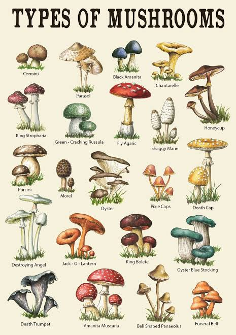

First section
This is filler until I know what to put in here for sure. Have a figure of different types of mushrooms.I am a huge fan of mushrooms.

Second section
This section has very important topics for the website. Wikipedia will help us with this.